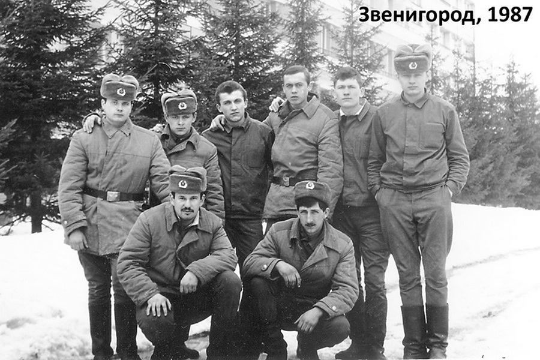

Часть 3
И снова в бой!Молодое пополнение
«Ты ведь почти ВУЗ закончил...»
Особое задание
«Русь» и «Аврора»
В отпуск!
И снова в бой!
На следующий день мы отбыли в город Звенигород, где нам дали выходной. Когда старшина ушел, мы коллективно сварганили самопал, который стрелял патронами от дюбельного пистолета, а вместо пули – обычный щебень подходящего размера. Так что выдавшийся выходной мы отметили салютом и парой десятков дырявых консервных банок.
Следующее утро началось с вливания: старшина заявился в казарму достаточно рано, и кто-то сдал ему информацию о нашем вчерашнем тире. Наш взвод, построенный по этому случаю по стойке смирно, упорно молчал. Но появившийся уже ротный пообещал, что наказывать никого не будет, если мы добровольно сдадим «оружие». Пришлось сдаться. Выслушав еще минут 15 о том, как мы могли покалечить друг друга, взвод, как и обычно, отправился на работу, которая давно стала обыденностью и ни положительных, ни отрицательных эмоций не вызывала. Тем более что мы уже перевалили через пик нашей службы, и каждый день приближал нас к дембелю.
Природа летом в Звенигороде великолепна. Всю эту красоту на армейском языке я описывать не буду, тем более, что там будет много повторяющихся слов. Помните такой матерный анекдот, когда разговаривают два строителя у носилок с раствором (в нашем случае два военных строителя):
- Нахуя дохуя нахуярил?
- Ну а хули, похуярили (расхуяривай)!
Вот в этом и проявлялась стройбатовская сущность. Да, о природе… Я уже писал, что территория санатория была вылизана до блеска, кованная ограда вокруг него всегда была выкрашена в черный цвет, все фонари в старинном стиле работали исправно. Небольшой лесок за забором изобиловал березами и лещиной, чем мы и пользовались. Весной, когда сок начинал интенсивное движение в березах, мы делали надрезы в коре и ставили 3-4 емкости. Утром забирали собранные несколько литров чистейшего натурального березового сока. А когда на деревьях созревал лесной орех, мы набирали полные карманы и потом на стройке дружно долбили их молотком.
Немного в стороне располагался Саввино-Сторожевский монастырь, и заодно действующий музей старины. Многие исторические фильмы снимались в этом монастыре. За дорогой начинался лесной массив, который тянулся вдоль Москвы-реки.
Наши офицеры любили отдыхать в тех местах и частенько брали меня и моего друга Сашку Крипака, чтобы мы подготавливали им место отдыха: собирали дрова, готовили мангал. Правда, приготовление шашлыка они не доверяли никому. Но нам и так было нормально: мы не шли на работу или не торчали в казарме, могли скупаться в реке или просто отдохнуть, пока начальство оттягивалось.
Молодое пополнение
Дни шли все медленнее. Праздник пришел в роту, когда к нам прислали пополнение вместо уже уволившихся в запас. Взвод из киргизов, узбеков и таджиков, все как на подбор чуть выше полутора метра и очень худые. На складе была одежда только 52-54 размеров. Вот наших «великанов» в нее и одели. Но поскольку молодые еще были далеки от понятия ушить одежду, да и по сроку службы им это было еще не положено, то выглядели они, как шарпеи – сплошные ходячие складки. Хотя мы были не очень кровожадные, но на всякий случай всех духов разместили в отдельном кубрике казармы, и офицеры тщательно их пасли. В казарме вечерами снова стали появляться по 30-40 нарядчиков, которые тщательно, с мылом, драяли полы везде, где их можно было отодраять. Ночами, когда не спалось, изредка происходили «ночные вождения» и «ралли». Это, конечно, были неуставные отношения. «Ночное вождение» представляло из себя ползание «духа» под кроватями с дырчанием и скрипом тормозов. «Ралли» - почти тотализатор. Несколько проштрафившихся молодых становились с одной стороны взлетки и на четвереньках бежали ко второму краю. Иногда мы делали ставки: одна или две сигареты на кого-то из бегунов. Но через это проходили все, а традиции в армии – вещь святая.
На работе с приходом молодых тоже стало полегче: было кому подносить раствор, замешивать шпатлевку и убирать мусор. Хотя, честно говоря, новые «духи» были намного тупее нашего призыва. Если из наших кто-то и «косил» под незнание языка, то тут большинство действительно его не знали, и естественно, в первую очередь, изучили русский матерный. Равшан и Джамшут из популярной юмористической передачи просто отдыхают. В работе молодым тоже нужно было долго объяснять, что и как, но зачастую и это не помогало. Но нам было нормально с ними работать, - наши узбек и таджик (Ибодуло и Кучкар) при необходимости переводили задачу.
Свою норму мы начали выполнять на 110-120%. Рекорд производительности шпатлевки решил поставить и другой мой кореш Сыч. Он взялся дневную норму – 36 кв.м первой черновой шпатлевки, - сделать за 40 минут. Мы охотно поспорили с ним на 2 пачки сигарет, что он не сможет этого сделать. Он попросил небольшой бонус – размешивать ему шпатлевку будем мы. И что вы думаете, уже через 34 минуты норма была выполнена, а я перебежками двинулся в сторону магазина за сигаретами. Остаток дня Сыч просидел с нами, куря честно выспоренные сигареты и травя анекдоты. Понятно, что о такой производительности начальству знать было не положено.
«Ты ведь почти ВУЗ закончил...»
Как-то в нашей ротной каптерке сломался замок. Двухбородочный ключ никак не хотел проворачиваться в замке. Но ведь каптерка - это почти закрома родины и доступ к ним должен быть ограничен. Дневальные скрутили замок с двери и пару часов ковырялись в нем, но без результата. Потом еще минут 40 тем же занимался прапор, но и с тем же результатом. Когда ему надоело заниматься «онанизмом» с отверткой, молотком и плоскогубцами (а другого инструмента в роте просто не было), он решил вызвать меня. «Ты кажется почти институт закончил?» - начал он издали. И не дожидаясь ответа продолжил: «Нужно сделать, чтобы замок закрывался. Время до утра. Получится - увольнительная, нет - наряд». Да, прямо кнутом и пряником. Жаль, что будущих технологов в институте не обучали ремонтировать замки.
Мне выделили стол в канцелярии и я приступил к исследованиям. Выяснилась одна неприятная мелочь: либо дневальные, либо прапор повынимали пластины из секрета замка и перепутали их, когда ставили обратно. Ключ физически не мог повернуться в скважине. Вот тут и пригодился институт - так называемая «поплавковая сортировка». Я перебрал все комбинации в расположении 5-и пластин, но замок не работал. Потом я попытался расположить эти зловредные пластины визуально, повторяя рисунок на бороздках ключа. Но тоже случился облом.
Время перевалило за полночь и начало клонить в сон. На увольнительную как-то было наср... безразлично, но в наряд не хотелось. Я стал «упрощать» конструкцию замка - выкинул одну из пластин. Замок стал закрываться, но приходилось дергать по сторонам ключом. Потом за первой изъятой пластиной последовала вторая и третья. Замок заработал, как новый, но оставшиеся две пластины немного болтались в замке и иногда подклинивали. Выручил старый армейский журнал, из которого была вырвана страница и сложенна в несколько раз. Посредине я прорезал ножом дырку для ключа, впихнул вместо отсутствующих пластин и собрал замок. Все заработало, как часы. Правда на связке ключей, оставленной мне прапором, было шесть разных двухбородочных ключей, и только один из них не смог открыть отремонтированный замок. Но задача как была поставлена? «Чтобы замок закрывался». И он закрывался и даже открывался. А то, что почти все ключи к нему подходили, ну не обращать же внимание на всякие мелочи. И об этом ведь знал только я. А замок великолепно проработал до моего дембеля, на что я даже не рассчитывал.
Особое задание
Через пару дней меня вызвал ротный и сказал, что мне предстоит особое задание. В нашей части в Рузе казарму «разбомбили»: повыкручивали лампочки, поснимали водопроводные краны, сорвали дверь и побили стекла. Но наша командировочная жизнь непредсказуемая, и в любой момент подразделение может быть отправлено в часть, поэтому все нужно привести в божеский вид и охранять ее до момента возвращения. Конечно, уезжать от друзей не очень хотелось, но, во-первых, приказ, а во-вторых – это не работа, а отдых в сравнении с частыми круглосуточными бдениями на стройке.
Самыми блатными должностями у нас в части в Рузе считались КППшники на двух въездах (которые были постоянными и сменялись только по залету), пяток водителей, почтальон (и он же по совместительству библиотекарь) и писарь, который управлялся с пишущей машинкой так же, как и я - одним пальцем. Последним двоим была вообще лафа, они имели свободный выход из части, но в саму Москву без отдельного пропуска ездить не могли. Но охранять казарму тоже неплохо. И с вечерней машиной, которая привозила нам ужин, я отбыл в родную часть.
Казарма действительно имела очень грустный вид. Разместился я в каптерке, но как оказалось, я там был не один. Две крупные крысы под пустыми стеллажами устроили то ли чемпионат по футболу, то ли играли в ловитки. При малейшем шорохе с моей стороны они затихали на пару минут, но потом все продолжалось. Страха перед этими непарнокопытными я не испытывал, поэтому уткнулся носом в стену и попытался уснуть. Но сволочные «футболисты» видимо нашли кусок фольги и весьма шумно гоняли его.
И тут меня понесло, в смысле творчества. Я нашел две алюминиевые крышки от кастрюль. Большую положил на пол, на нее - кусок кирпича, а сверху на него - маленькую крышку. Наверх конструкции я положил кусочки хлеба и подвел к этой «кормушке» 220 вольт. Для надежности и крышки, и еда были политы водой. Никакого выключателя не нашлось, поэтому я лежал на кровати и держал в руках два конца оголенного провода, готовый замкнуть их в нужный момент. Крысе, чтобы добраться к еде, нужно было бы стать задними лапами на большую крышку, а передние поставить на верхнюю маленькую. Минут 15 я изображал из себя спящего, готовый, как минер, замкнуть электродетонатор. И вот появилась крыса, размером с среднего кролика. Она осторожно подошла к еде, с опаской поглядывая в мою сторону. Я затаил дыхание. Но крыса стала как-то странно удлиняться: задние лапы стояли еще на полу, а морда приближалась к еде! Но ей не хватило буквально пару сантиметров. И вот задние лапы на нижней крышке, а передние - на верхней. Подсечка, в смысле едва заметное замыкание проводов. Это было грандиозно! Было ощущение запуска ракеты: крыса вытянулась и почти не касаясь лапами пола врезалась головой в один из стеллажей, взлетела метра на полтора в воздух и, резко изменив направление и пролетев почти 4 метра, врезалась в стену. Несмотря на все кульбиты она упала на лапы. Постояв пару секунд, она юркнула под стеллажи. Хоть результат и не был достигнут, но продолжения чемпионата по футболу не было и я, наконец-то, лег спать.
Утром – визит в штаб, чтобы стать на довольствие, но кроме зам. по тылу сталкиваюсь с начальником штаба, экс-ротным. Минут 30 выслушиваю речи типа «не дай Бог, если…», «сгною…», «дисциплина» и тому подобное.
А работать было нужно, пусть не спеша, но чтобы были видны хоть какие-то результаты. Забиваю пожарные выходы, навешиваю на петли входную дверь, на которой не предусмотрен входной замок, так как перед входом обычно находится дневальный. Но не буду же я ночами спать под дверью. Из подручных средств - брючного ремня и железной скобы, делаю такую-себе завязочку на двери. После «закрытия» дверь слегка шевелиться, но толчки и удары средней силы выдерживает. Изнутри я уже достаточно надежно закрыт. А снаружи – ну куда я пойду из казармы, тем более надолго? Но в голову приходит еще одна гениальная мысль. В канцелярии находилась кнопка вызова дневального, а у тумбочки - звонок. Их я и решил использовать. Кнопку перевешиваю снаружи у двери казармы. Теперь ко мне можно было позвонить. Вечерами ко мне стали забегать мои товарищи по учебной роте, с которыми мы договорились об условном звонке.
Меня заинтересовал ротный чердак. Лестницы не было, и я выпрашиваю в гараже длинную доску, к которой прибиваю небольшие бруски. Ну вот, мы и в Хопре, в смысле на чердаке. А тут просто Клондайк: сапоги, бушлаты, форма, шинели, шапки, старые дырявые противогазы. В общем, сэконд-хэнд, но есть весьма неплохое шмотье. Подбираю себе ХБ, посолиднее все-таки, нахожу целые сапоги, а то мои текут и в одном дырка в голенище. Выбрал еще несколько комплектов ВСО для своего отделения. Тут приходит в голову забавная мысль: набиваю старые штаны и куртку ВСО разным шмотьем, в противогаз запихаю пару валяющихся там шапок, и на получившуюся голову одеваю пилотку. Ко всему этому добавляю пару сапог. Вышло неплохое чучело, которое я спускаю вниз. Недолго думая, всю эту конструкцию привязываю на тумбочке дневального. Вот и охрана у входа получилась.
К вечеру роты возвратились с работы, и я вышел встретить своих корешей. Народ притащил, у кого что было: чай, сухари, кипятильник из двух лезвий, кто-то приволок пол бутылки самогона. В общем, посидели нормально. Часов в 9 вечера народ расползся для вечерней прогулки и поверки, после которой несколько человек вернулись обратно, предупредив дневальных своих рот. В 6 утра остатки гостей разбежались, и я позволил себе поваляться до развода на плацу. В столовую не пошел, с вечера еще остались чай, хлеб, масло и сахар.
Когда на плацу раздалась команда «по объектам», я выполз из каптерки. И вовремя. В дверь послышались увесистые нетерпеливые удары (нет, чтобы позвонить, как это делают приличные люди). По пути к дверям хватаю банку с остатками воды и выливаю на пол, несколькими движениями швабры размазываю ее и открываю дверь. На входе начальник штаба. Увидев меня со шваброй и мокрый пол, слегка улыбнулся. «Правильно!», - сказал он. «Еще бы», - подумал я. «Что за ху…ня?» - спросил он, показывая на ремень на двери. Пришлось объяснить, что эта «ху…ня» - весьма полезная штука. Но когда капитан увидел чучело, а в коридоре было темновато из-за отсутствия лампочек, то его реакция была вполне предсказуемой: «Кто? Почему не на работе? В комендатуру захотели, оба?». Но подойдя ближе, видимо, стал понимать, что тут что-то не то. В общем, еще минут 10 я выслушивал воспитательную речь, а в конце получил команду убрать все это немедленно. Ну что ж, пришлось безымянного друга переселить тоже в каптерку - будем жить вчетвером: я, Безымянный и две крысы, которые решили не менять место своего жительства из-за нашего взаимного непонимания.
После обеда меня позвали водилы из гаража помочь затолкать поломанный ЗИЛ из ангара на яму. Работа не заняла много времени, и уже через полчаса мы сидели в шоферском вагончике и травили байки. «Молока хочешь?» - спросили пацаны перед моим уходом, показывая на 3 ящика Можайского молока в стеклянных бутылках. «Только бутылки потом принеси, кладовщику сдать нужно». А чего же отказываться? Не сильно наглея, я прихватил две бутылки и отправился бездельничать дальше. Одну бутылку молока я выпил сразу и чтобы не разбить эту ценную тару, положил ее на стеллаж поверх ВСО. Нужно было идти в штаб заказать стекла, лампочки и краску. На этот раз меня миновало: начальника штаба я не встретил. Так что и на этот день работа была закончена так и не начавшись по причине отсутствия материала.
Когда я зашел в каптерку, то увидел, что в бутылке от молока что-то шевелится. Присмотревшись, я обнаружил в ней маленького крысенка, который сполз в горлышко, а выбраться у него не получилось. Крысенок был настолько маленький, что поместился в спичечный коробок. Что с ним делать я еще не придумал, но убивать было жалко, уж больно симпатичная у него была морда в отличии от его папашки или мамашки. И тут, как всегда, у меня пошел процесс. Я сделал ему ошейник и прицепил к нему поводок из обувной нитки. Крысенок был выпущен на стол и, сделав несколько неудачных попыток смыться, видимо, смирился. Я положил его в литровую банку, найденную на чердаке, и насыпал на дно хлебные крошки. Так у меня появился свой живой уголок.
Вечером мы с корешами решили немного пошутить. Взяв крысенка, мы пошли к плацу, куда вечером после работы привозят солдат. Когда поставили нашего серого «мустанга» на лапы и дали ему щелбан под зад, он с перепугу побежал в сторону плаца. А мы с криками «Ищи! Фас! Взять!», слегка придерживая за поводок, ринулись за ним. Сразу пацаны не понял в чем дело и стал отходить, давая нам дорогу. Но постепенно легкий регот расползся по всему плацу. Крысенок стал центром внимания: кто-то пытался скормить ему кусочек сахара, кто-то – корку хлеба. Но вскоре веселуху пришлось прекратить: из штаба вышли начальник штаба и замполит.
Как обычно, на следующий день начальство знало о нашей выходке, и замполит имел беседу со мной (слава Богу, что замполит), который в самом начале беседы с улыбкой сказал: «По долгу службы я должен с тобой поговорить…». Я понял, откуда «дует ветер», а замполит просто пожалел меня по старой памяти, взяв на себя миссию повоспитывать. Зато после той вылазки на плац у крысенка было столько жратвы, сколько он не съел бы за всю свою жизнь. Многие тащили сухари, хлеб и даже конфеты. Жаль, с сыром только не сложилось. Как ни прискорбно, но видимо от переедания или запора он издох недели через 2 и был похоронен на «новодевичем» кладбище нашей части за казармой у канализационного люка.
Вечерние посиделки с корешами происходили почти каждый вечер и длились до глубокой ночи. Многие офицеры видели, что вечером двери в казарме нашей роты часто гостеприимно открываются. Но большинству было по-...уй, тем более мы не набухивались до посинения и вели себя тихо. Но в части было два друга-летехи, пару лет назад закончивших общевойсковое училище. Один из них носил красные погоны и петлицы, хотя эмблемы на них были стройбатовскими. И два раза эти герои-супермены пытались устроить облаву. Первый раз я их просто заметил.
Часов в 11 вечера мои пацаны сидели в ленкомнате и занимались кощунством: с выключенным светом варили гречку в этом святом месте. Я же вышел на взлетку, подошел к окну и хотел закурить. Но в свете гаражного прожектора заметил две фигуры, крадущиеся со стороны КПП у 2-й роты. Подойдя ближе, они стали у угла 3-й роты и начали показывать в мою сторону. Меня, я так понимаю, они видеть не могли, так как свет в казарме был выключен. Не долго думая, я предупредил пацанов, арматурой отжал забитый пожарный выход и кореша удалились через него вместе с казаном гречки. Я открыл окно для проветривания и закрыл ленкомнату на ключ. Подойдя к окну я успел заметить, как один из летёх обежал казарму, намереваясь подойти к ней именно со стороны ленкомнаты. Другого я уже не видел. Но они оба не заставили себя ждать. Первый - краснопогонник, - со всей силы рвонул входную дверь и оборвал мою завязочку, а второй попытался быстро влезть в окно ленкомнаты. Мне стало смешно, так как, видимо, у летехи не очень удачно получилось и он грохнулся или с подоконника, или с приставленного к нему столу, а потом еще врезался в закрытую дверь помещения. Краснопогонник с включенным фонарем метался по казарме, но никого не нашел. К тому моменту я уже включил свет и выпустил «ленинского» узника. Нет, ударить в грязь лицом они не могли, и хотя все вышло смешно, они пытались меня попугать, а обнаружив открытый пожарный выход ехидно улыбались, но ушли ни с чем. Что немного раздражало, так это то, что офицеры были почти моими ровесниками, закончившими 3-летнее общевойсковое училище, а двое из моих друзей были старше них на пару лет, при этом эти супермены пытались выглядеть крутыми павлинами в глазах солдат, но тянули лишь на бройлеров.
Эта облава произошла ночью, когда дежурным по части был краснопогонник. Мы с пацанами предположили, что в дежурство чернопогонника облава повториться - честь офицера нужно блюсти, а они оконфузились. Ну прямо в воду глядели. Наш ответный план был таков: сэмитировать застолье и быстро слинять. Один из КПП-шников был моим земляком, и я попросил его позвонить в роту, если дежурный по части выйдет из штаба после отбоя. Ближе к полуночи мы включили в той же ленкомнате свет, занесли и поставили на стол пустой казан и две стеклянные бутылки с водой. Несколько пацанов помелькали у окна. При включенном свете все, что происходило в помещении, было видно как на ладони. Спектакль длился минут 5, после чего пацаны ушли. Замечу, пожарный выход на тот момент я надежно заколотил. И тут звонок на телефон дневального: КПП-шник предупредил, что краснопогонник вбежал в штаб и почти сразу вместе с дежурным по части выбежал и направился в сторону столовой. Если они собрались попасть ко мне в казарму, то решили зайти с обратной стороны через прошлый раз открытый пожарный выход. Но он выходил на территорию строительной части, и чтобы добраться к нему, нужно было обежать круг метров 400 или же лезть через высокий деревянный забор. Видимо, они решили немного размяться. Спрятав казан, я закрыл ленкомнату. Стопроцентной уверенности, что сладкая парочка отправилась ко мне, не было, но оставалось только ждать. Я, на всякий случай, открыл завязочку на входной двери, чтоб никакой идиот ее снова не порвал и, заодно, решил покурить на крыльце. Минуты три ничего не происходило и я уже подумал, что спектакль отменили, но нет... Какой-то хруст, треск раздался со стороны пожарного выхода. Но результат не был достигнут: кровельные гвозди в количестве 6 штук знали свое дело. Конечно, можно было и меньшее их количество вогнать в раму, так как дверь-то открывалась наружу и выбить ее с улицы было нельзя, только выковыривать. Как потом я увидел, у них с собой была отвертка, которая не смогла составить конкуренцию кровельным гвоздям.
И тут над деревянным забором, рядом с пожарным выходом, появилась красная фуражка, рядом вторая, - черная, - и два тела сели на верхушку забора, уставившись на меня. Ничего лучшего, чем сказать «Здравия желаю, товарищи лейтенанты» я не нашел. Они, видимо, были в некотором ступоре, не ожидая увидеть меня на улице. Ну да, я же должен был участвовать в массовой пьяной оргии или еще где. Краснопогонник спрыгнул с забора, а у его партнера случился конфуз: маленький гвоздик из забора сделал черное дело - дыра в штанах сантиметров 30 в длину. Видимо нервы у них сдали, и они вбежали в казарму, мягко говоря, прихватив меня с собой, и сразу же направились к ленкомнате. Я спокойно ее открыл. Легкий ступор и «заборный взгляд», но наличие наполненных бутылок их обнадежило. Но снова облом - в бутылках вода. Попытка допроса типа «Кто у тебя бывает?», «Что пьете?», «Чем занимаетесь?». Понимая бесполезность мероприятия, выписали мне «скворечник» и удалились. Больше попыток пасти казарму никто не предпринимал, да и мы решили перенести встречи в тесноватую каптерку: береженого Бог бережет.
«Скворечник» меня не впечатлил, так как наш прапор, даже в шутку, бил сильнее, а играть в «Казаки-разбойники» я любил с детства. Да и вообще, если меня начинали сильно донимать, то я становился весьма прыдумкувато-гамнистым. Жаль, что все это нельзя было заснять, вышел бы неплохой фильмец, похлеще чем известный фильм «Стройбатя», в котором служба в стройбате была представлена, как некий детский сад для переросших мальчиков.
«Русь» и «Аврора»
Но вернемся к трудам праведным. Утром я с зам по тылу отправился на УАЗике за оконными стеклами. В Рузе загрузили около 100 листов и завезли их в казарму. После обеда мы с ним же отправились за краской на склад, который находился в красивой недостроенной многоэтажке. И тут началось самое интересное. Оказалось, чтобы попасть на склад, нужно было получить специальный пропуск, хотя в само здание вход был свободный. Оформив все документы, мы отправились в подвал, пройдя двое железных дверей и охрану. Было как-то странно, что склад со стройматериалами был так законспирирован. Но спустившись, как я думал, в подвал, увидел, что подвал – это не совсем подвал, а площадка, с которой вниз шли ступени. На площадках внизу горело тусклое дежурное освещение. Я насчитал не менее 9 уровней вниз, которые нормально просматривались, но какие-то световые отблески были видны еще ниже, но рассмотреть, что там внизу было невозможно. Мы опустились на -2 уровень, и с площадки я увидел дверь, а точнее люк как в подводной лодке: со штурвалом и фиксатором. Когда дверь открылась, я прикинул ее толщину, около 25-30 см. За дверьми шел длинный узкий мрачный коридор, длину которого определить было невозможно. По стенам и потолку шло множество кабелей, а под ногами по средине коридора был широкий желоб с десятком труб. В одной из комнат и был склад, обычный строительный склад с красками, клеями, обоями, цементом и прочими стройматериалами. Мы получили краску и тоже притащили ее в казарму. Старлей был нормальным офицером, не брезговал помочь солдатам в работе. Для него, как и для меня, увиденное в санатории ВЦСПС «Русь» тоже было небольшим шоком. Не зря строители из Севводстроя рассказывали о десятках километров подводных и подземных тоннелей. Мы по-другому начали смотреть и на два других небольших объекта, расположенных метрах в 300-ах от «Руси». Один, именуемый «Аврора», мало походил на административное строение, а бетонные гаражи, частично погруженные в землю, выглядели чересчур мощно. Тем более, после дождей земля в некоторых местах вокруг «Авроры» и гаражей немного просела, и то тут, то там из земли просматривались углы бетонных блоков.
Но это лирика. На следующий день начинается полномасштабная работа: порезка стекла, остекление окон, подшпатлевывание и подкраска стен и многое другое. Большого энтузиазма в работе я не проявлял, но работал на совесть.
Вечерние посиделки с товарищами продолжались. Вовка из второй роты при разгрузке машины в столовой спер мешок вермишели, а из найденной спирали от какого-то нагревательного прибора, куска шифера и нескольких кирпичей сделали «козла», на котором варили еду. А тут еще и начальник штаба уехал на какие-то курсы. Ко мне на пару часов заехал отец. Он был в командировке в Москве, а поезд домой был только поздно вечером. Я договорился с КППшниками, и его пропустили в казарму. Я был рад снова увидеть кого-то из родных и накормил отца «трофейной» вермишелью.
Как-то в субботу, поздно вечером, в роту приехал наш каптер, чтобы сдать белье в прачечную. Я обратил внимание на фингал у него под глазом и сбитые кулаки. Рассказывать, что произошло, он сразу не захотел, но когда мы уже собирались ложиться спать, он сказал: «Я буду спать в сушилке, давай и ты перебирайся ко мне, только прихвати что-нибудь тяжелое». Поймав мой вопросительный взгляд, он рассказал, что пару дней назад его кОреша Юрку, - водилу из гаража, - сильно избили чечены из соседней части. Юрку увезли в больницу с травмой головы, сломанным носом и разбитым лицом. Каптер знал тех, кто бил, и приехав в часть, вызвал этих пятерых за казарму. Пришли только четверо - самоуверенные и наглые. Каптеру, как КМС по боксу, потребовалось не больше минуты, чтобы уложить всех четверых, хотя один фингал он все же заработал. Чечены, быстро уползающие с «поля боя», обещали привести всю свою роту и отомстить обидчику. Я выполнил просьбу каптера, найдя в казарме увесистый кусок арматуры и большой плоский напильник, а на взлетке расставил штук 15 табуретов: если в темноте кто-то зацепится, то будет хороший грохот.
Ночь прошла неспокойно, мы спали по очереди, прислушиваясь к каждому шороху. Но никто «в гости» не пришел, и утром, сдав белье, каптер уехал. На всякий случай еще пару ночей я спал в обнимку с арматурой, но все было тихо и я успокоился.
Через пару дней мне пришлось заняться неприятной работой: почти все очки в ротном туалете были забиты. Конечно, такая работа не доставляла удовольствия. У старшины 3-й роты я выпросил в помощь пару молодых, а у сантехников взял длинный трос. Но трос входил в трубу максимум метра на 3 и напрочь застревал, а до люка оставалось еще примерно столько же. Тогда опытный старшина сказал, что тут нужны пожарные. С их помощью он пару лет назад прочистил трубы в его казарме. На удивление, на следующий день пожарная машина уже стояла перед казармой. Рукав затянули в сортир, брансбойт обмотали куском старой шинели и вставили в очко. Хорошо, что я успел выйти из туалета, так как один пожарный и два духа оказались мокрыми с ног до головы: фонтаны ударили в потолок из всех остальных очков. Старшина 3-й роты, взявшийся мне активно помогать, выделил еще молодых бойцов, которые стали на куски шинелей и прочую ветошь, вставленную в остальные очки. Пожарные стали потихоньку повышать давление. Из-под ног бойцов во все стороны стали бить струи, а когда давление подняли еще побольше, пацаны стали взлетать на чопиках. Но тут у пожарных закончилась вода и они поехали на заправку.
Старшина привел еще человек 10 в помощь. Через час пожарная машина снова подъехала к казарме. На каждое очко поставили в обнимку по три бойца, предварительно поплотнее вогнав туда чопы. Старшина попросил пожарных дать полную мощность. Я со старшиной наблюдали за происходящим через приоткрытую дверь. Это было еще то зрелище: обнявшись за плечи, солдаты то по очереди, то все вместе приподымались в воздух, поддерживаемые идущими снизу струями воды. Приходилось отключать воду и снова забивать чопы. Но, в конце-концов, за окном ударил гейзер и по крыше казармы застучали крупные капли воды вперемешку с дерьмом. Но чувство удачно выполненной работы постепенно сменилось на удивление: фонтан бил не из люка, а значительно ближе из земли. «Сильно забито» - сказал старшина. Оно то так, но вода стала уходить из туалета и умывальника, так что, не вдаваясь в подробности, я доложил начальству, что канализация пробита, иначе бы меня ждала лопата и траншея до люка. Часа за полтора я с молодыми бойцами лопатой выгребли кавэлки из туалета, смели их с крыши казармы и я отправился приводить себя в порядок. Мне то было еще ничего, так как пострадали только сапоги, а пацаны были мокрыми и в дерьме с ног до головы. Да, есть такая работа - Родину защищать.
В отпуск!
Примерно за месяц я выполнил половину необходимой работы. Как-то ночью, а точнее ранним утром я услышал сильные удары во входную дверь. У казармы стояли человек 5 офицеров из нашей части. «У нас «ЧП», осматриваем все строения, сбежал рядовой из 3-й роты», - сказал дежурный по части. Я открыл им все комнаты для осмотра, но, естественно, в казарме никого не было. Для части побег – это действительно большие неприятности. Обычно первые сутки поиском и перехватом занималась сама часть, чтобы не выносить «сор из избы». Если за это время беглец находился, то, как правило, отделывается легким мордобоем, нарядами или гауптвахтой. Если нет – то оповещалась комендатура и вышестоящее Московское начальство. Но это уже «геморрой» для офицеров части: и комбат, и замполит, и ротный со взводным попадут под раздачу. Да и для беглеца становилось возможным продолжить службу в дисбате.
Конечно, утром в части начался серьезный движ: часть людей не вышла на работу, а прочесывала территорию за частью и поселок, пару машин выехали на автовокзалы в Рузу и Тучково. Вернувшийся начальник штаба возглавил поисковые мероприятия. Но безрезультатно. Комбат пообещал тому, кто найдет беглеца, отпуск. Я тоже просился поехать с группой, но мне отказали. Немного расстроившись, я вернулся в казарму.
Вечером я нагрел воды и сотворил подобие душа из двух табуреток, ведра с водой и тонкого резинового шланга. Но тут раздались отчетливые шаги по «взлетке». Я выглянул, но никого не было, да и звук прекратился. Только я начал мыться, как снова услышал какой-то шум. Но пока я накинул полотенце и вышел из умывальника, стало тихо. До вечера все было спокойно, но когда пришло время ложиться спать, снова раздался какой-то звук, который прекратился, как только я открыл дверь, выходя из каптерки. Тогда я поставил табурет на «взлетке» и сел ждать. Мнут через 10 снова послышались тихие шаги, полное ощущение, что кто-то идет по коридору, но весь коридор был передо мной и никого в нем не было. Поскольку в чертовщину я не верил, то понял – чердак, к которому приставлена моя импровизированная лестница. Поднимать панику, не проверив, не хотелось.
Рано утром, часов в 5 утра, я тихонько залез на чердак. Там, на куче шинелей спал боец. Я пошел к дежурному по части. Выслушав меня, он бегом метнулся к казарме, прихватив ротного 3-й роты, и они залезли на чердак. Бойцу помогли спуститься по не очень удобной лестнице. А часов в 9 утра меня вызвали в штаб. «В отпуск!!!», - подумал я. В штабе меня встречал лично начальник штаба. «Ну что, рассказывай», - сказал он. Я вкратце все рассказал. «Нет, ты рассказывай, как помогал прятаться беглецу!», - спокойно сказал капитан. Я остолбенел. Минут 20 я слушал о гауптвахте и о дембеле в последней партии. Когда я вышел из кабинета, то было очень обидно. Даже не столько за отпуск, сколько за тупость начальства и несправедливость. Да и морда у него была препротивнейшая, особенно когда он начинал орать и краснел. Я зашел к замполиту, но он сказал, что все знает, но начальник штаба категорически против предоставления отпуска. В мозгу в адрес капитана звучали слова, неприемлемые в приличном обществе.